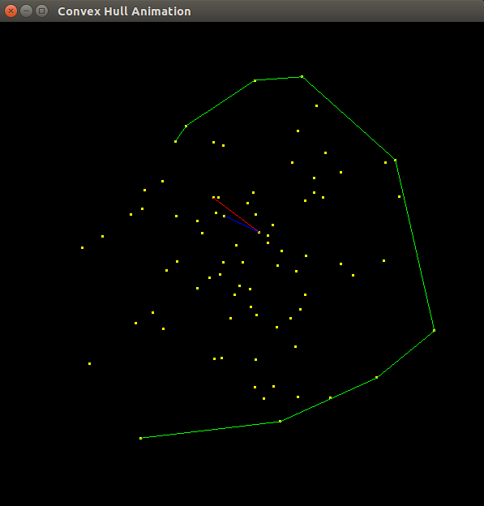
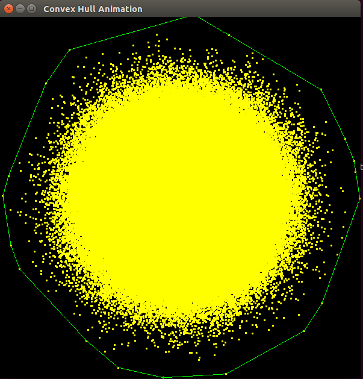

Convex Hull Algorithms
Objective:
Document behaviour of the algorithms on various testcases.
-
Normal Distribution
-
Uniform Distribution
We intend to compare the performance and accuracy of these algorithms for various test cases and also analyse behaviour of the algorithms in degenerate cases. We then present our rationale for determining the algorithm that outperforms the other two under mild assumptions.
Uniform Distribution
Random (floating point) numbers are generated in the range [-50, 50]. Every pair of such numbers are clubbed to form a point with coordinates (x,y).
Comments
For sufficiently large number of points (>500), the Convex Hull of the dataset looks like a square of length 100.
For about N = 1000000, the Convex Hull had about 40 points. (emperically determined)
Normal Distribution
Random (floating point) numbers are generated with dynamic variance. By the 68–95–99.7 rule, 3 in every thousand points are likely to be greater than thrice the standard deviation. Since we would like to restrict our range to [-50, 50]. For N lesser than 1000 we set the standard deviation to 16. And for N > 1000, the standard deviation is set to 12. These values are only to create a meaningful dataset that can be animated. Every pair of such numbers are clubbed to form a point with coordinates (x,y).
Comments
The Convex Hull of the dataset looks like a square of length 100.
For about N = 1000000, the Convex Hull had about 20 points. (emprically determined)


Degeneracies
Andrew's algorithm were very obedient. However Graham Scan algorithm and Jarvis March algorithm caused multiple issues:
-
Calculation of angle between two coincident arms sometime return an angle of PI or ZERO. This brought up an issues of ordering.
-
Graham Scan requires an explicit check between the last and first point of the Poly Line returnd by the algorithm. We hard-coded this feature by inserting the first point of the Convex Hull as with angle 2*PI and ZERO. Once the Hull was determined, we delete this repeated point. This issue is overcome in Andrew algorithm viz an implicit check between Llo and Lup.
-
Jarvis March requires the axis to be updated for every new point to be inserted into the Convex Hull. This is because if a constant axis is used, Incorrect points are inserted into the COnvex Hull. We overcame this issue by defining the axis of every iteration as the direction defined by the line segment joining the last two points in the Hull. The starting case being the X-axis.
Analysis
Since Jarvis March is an output-sensitive algorithm, It could provide better or worse performance given a particular dataset. With knowledge of the distribution represented by the dataset, we should prefer one algorithm over the others.